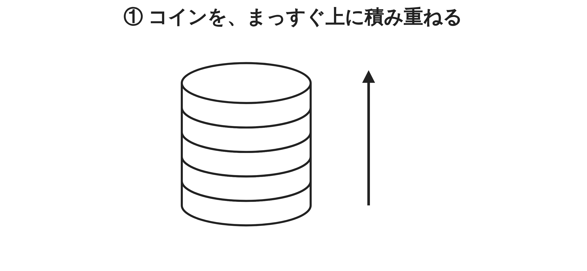
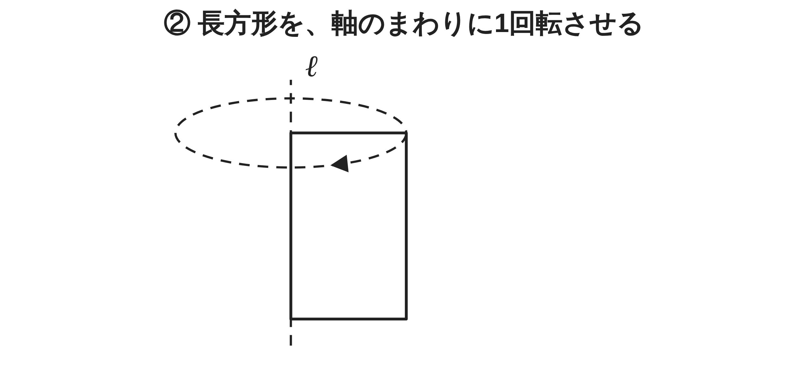
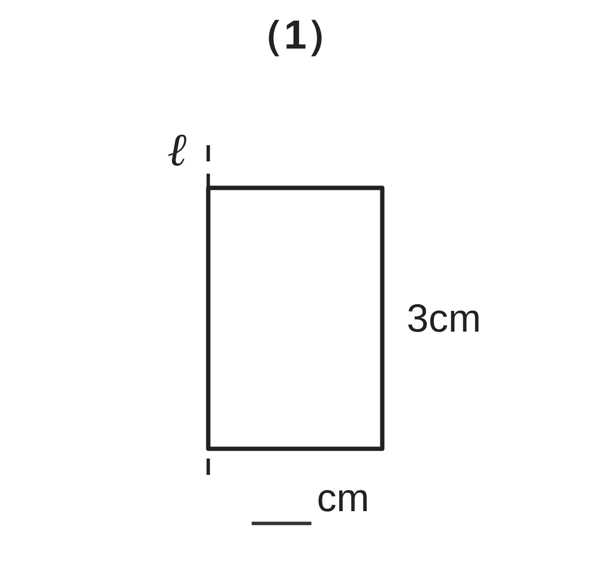
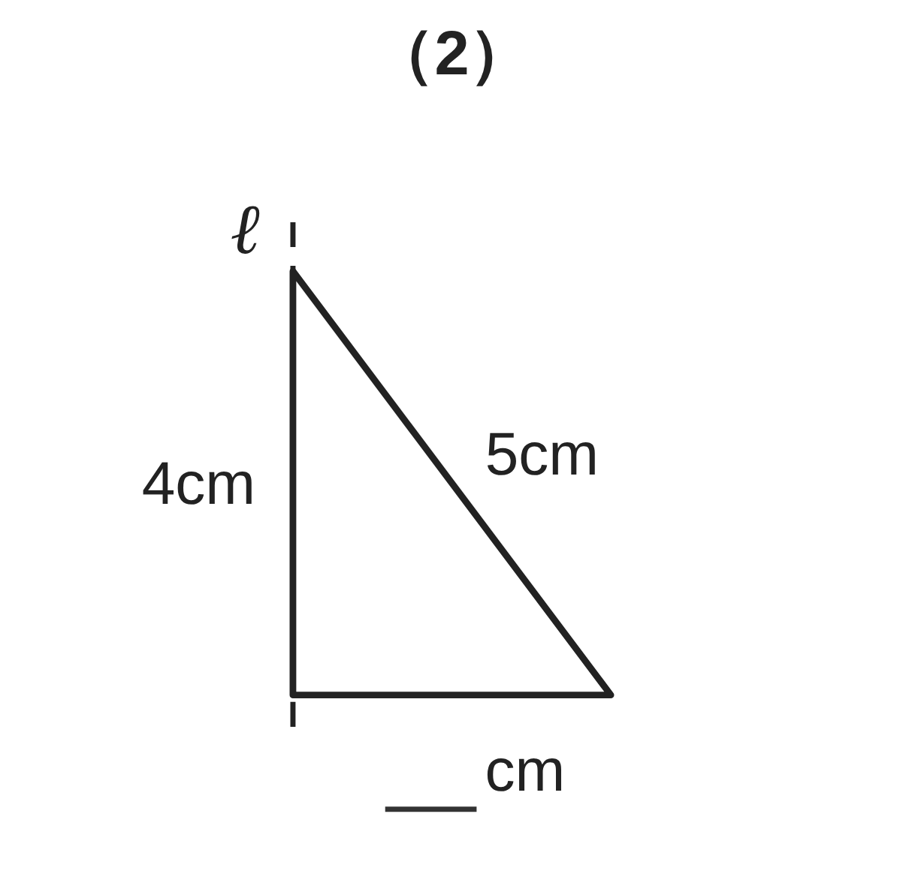
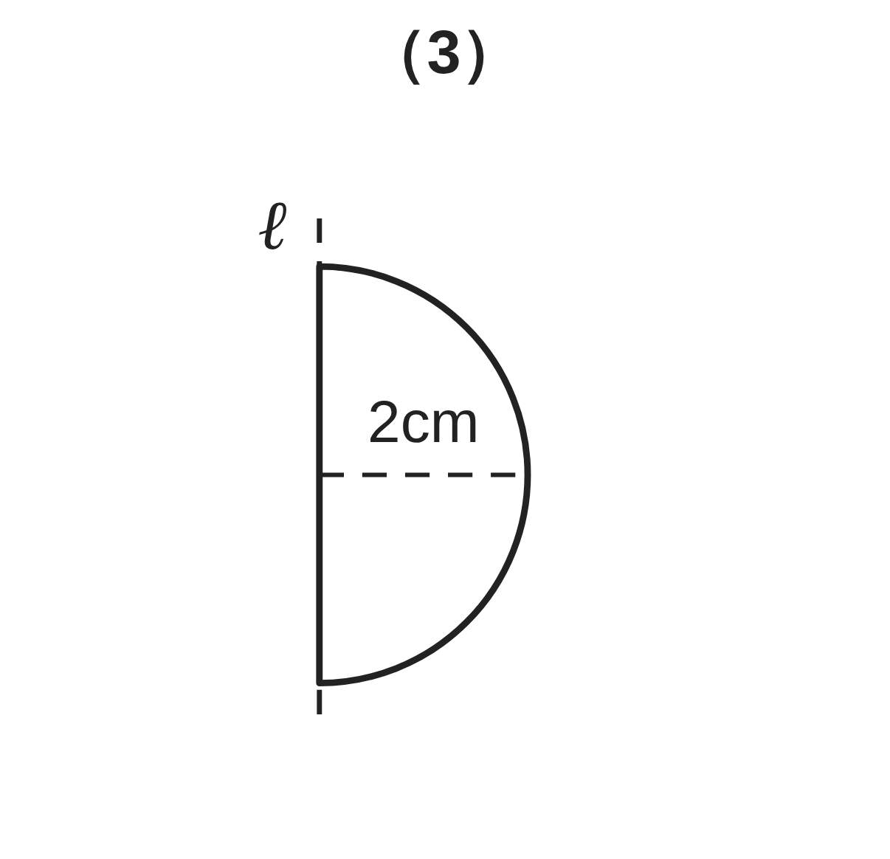
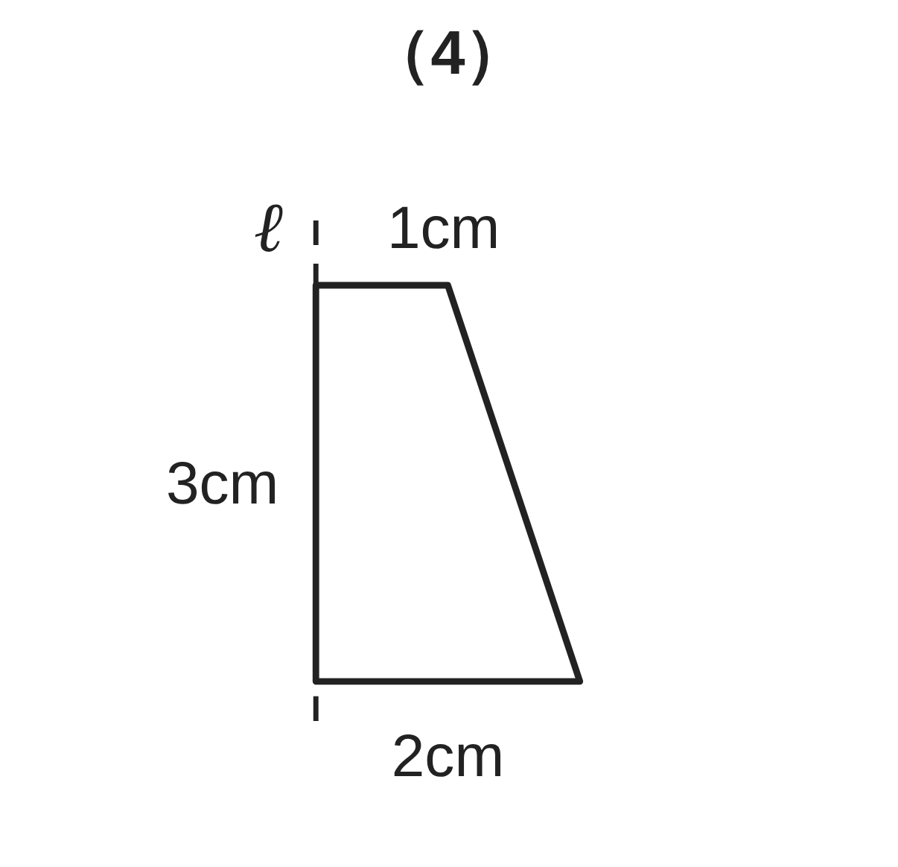
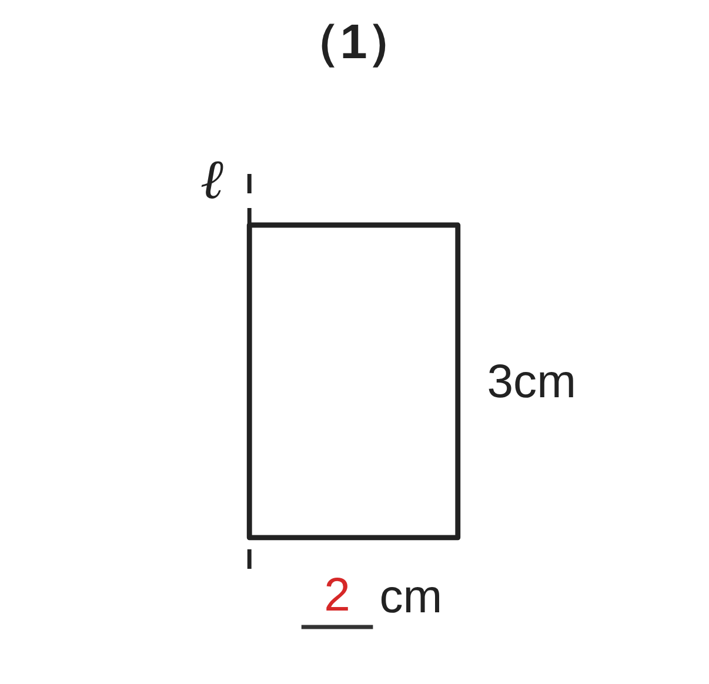
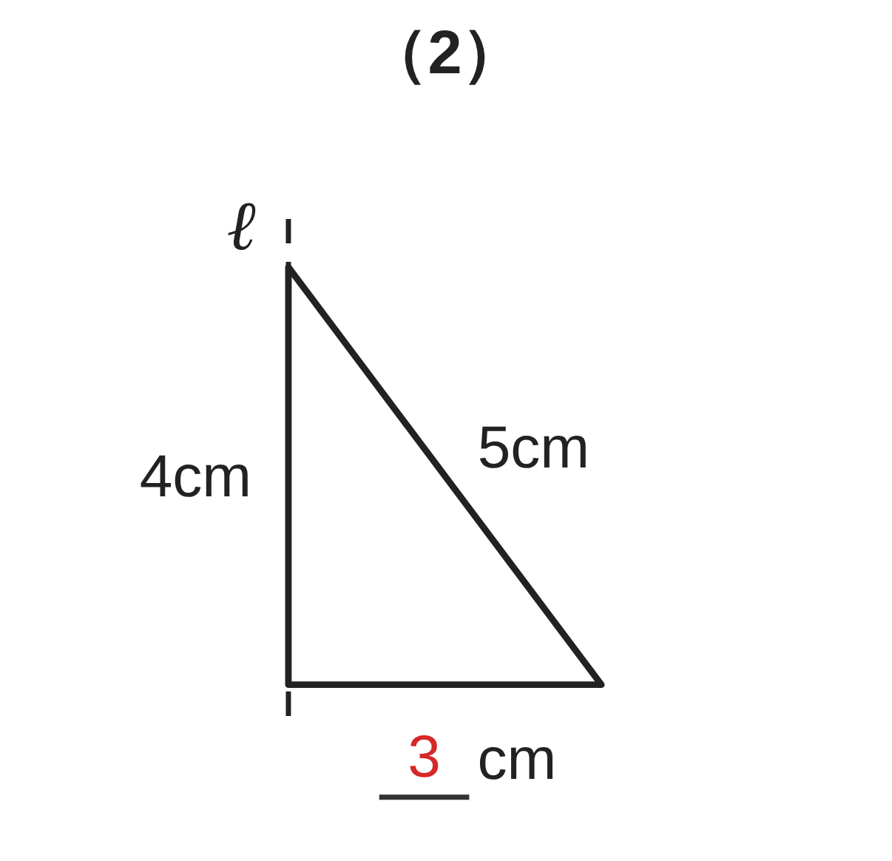
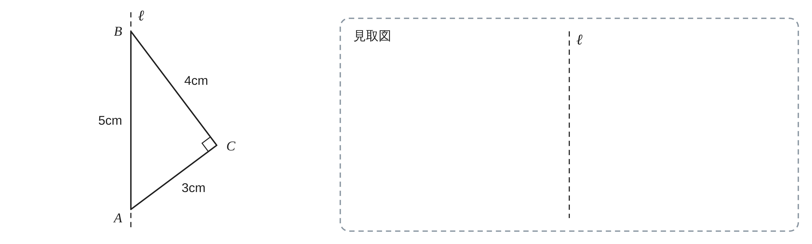

ペア学習
第5時 線や面を動かして、立体をつくろう
1人1問ずつ、言葉の意味を、自分の言葉で言う。前の時間は、直線と平面、平面と平面の位置関係を調べた。
平面上にある
交わる
平行
垂直
垂線
きょり
空間図形 第5時 線や面を動かして、立体をつくろう
めあて
第5時 線や面を動かして、立体をつくろう
学習課題
同じ大きさのコインを、まっすぐ上に積み重ねると、
どんな立体ができるだろう。また、長方形の厚紙を、
1つの辺を軸にして1回転させると、どんな立体ができるだろう。


【自分の考え】どんな立体ができるか。2つをくらべて、気づいたことも書こう。
空間図形 第5時 線や面を動かして、立体をつくろう
学習課題のまとめ
第5時 線や面を動かして、立体をつくろう
積み重ねる … 円柱
（円を、その面に垂直な方向に動かしたあと）
回転させる … 円柱
（長方形が動いたあと）
動かし方がちがっても、同じ立体ができる
空間図形 第5時 線や面を動かして、立体をつくろう
ことば
第5時 線や面を動かして、立体をつくろう
底面を、その面に な方向に動かすと、角柱や円柱ができる。
平面図形を、1つの直線を軸に1回転させてできる
立体を という。
回転体で、軸にした直線を という。
円柱や円錐の側面をつくる線分を という。
空間図形 第5時 線や面を動かして、立体をつくろう
ことば
第5時 線や面を動かして、立体をつくろう
底面を、その面に垂直な方向に動かすと、角柱や円柱ができる。
平面図形を、1つの直線を軸に1回転させてできる
立体を回転体という。
回転体で、軸にした直線を回転の軸という。
円柱や円錐の側面をつくる線分を母線という。
空間図形 第5時 線や面を動かして、立体をつくろう
例題
第5時 線や面を動かして、立体をつくろう
次の図形を、直線 ℓ（点線）を軸として1回転させると、どんな立体ができるか。
名前と、その立体にある円の半径を答えよう。（球は、球の半径）




| （1） | （2） | （3） | （4） | |
|---|---|---|---|---|
| 立体の名前 | ||||
| 円の半径 | cm | cm | cm | cm と cm |
【気づき】軸に垂直な辺・平行な辺・ななめの辺は、回ると何になるか。
空間図形 第5時 線や面を動かして、立体をつくろう
例題 解答
第5時 線や面を動かして、立体をつくろう


| （1） | （2） | （3） | （4） | |
|---|---|---|---|---|
| 立体の名前 | 円柱 | 円錐 | 球 | 円錐台 |
| 円の半径 | 2cm | 3cm | 2cm | 1cm と 2cm |
軸に垂直な辺 → 底面の円
軸に平行な辺 → 円柱の側面をつくる線分（母線）
軸にななめの辺 → 円錐の側面をつくる線分（母線）
空間図形 第5時 線や面を動かして、立体をつくろう
考えよう
第5時 線や面を動かして、立体をつくろう
①
どんな立体ができるだろう。予想して、右の枠に見取図をかこう。

発展（解き終わった人は）
軸に垂直な平面で切ったとき、切り口の円がいちばん大きくなるのは、どこで切ったときだろう。その円の半径は、何 cm だろう。
②
どうして、その立体になるのか。理由を説明しよう。
（図にかきこんでもよい）
空間図形 第5時 線や面を動かして、立体をつくろう
振り返り
第5時 線や面を動かして、立体をつくろう
今日のめあて
回転体
回転の軸
母線
垂直な方向に動かす
今日わかったことを、ペアで1つずつ言い合おう。
ワークシートと演習プリントを出そう。（未完成でも出す）
空間図形 第5時 線や面を動かして、立体をつくろう